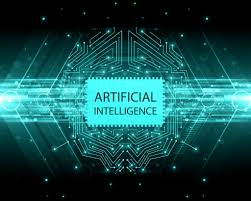

How does knowledge mean? Intellect is the most simplistic human behavior, yet rarely an indicator of intellect, also the most complicated insect behaviour. What's the distinction? Consider the comportement of the digger wasp, Ineumoneus Sphex. Once the woman wasp returns with food to her burrow, it first sits on the door, inspects intruders into her burrow, and only takes its food inside if the coast is open. When food travels a few inches from the entrance to her burrow when she is inside, the real essence of her instinctual actions is revealed:On emergence, as often as food is displaced, she will repeat the entire procedure. The capacity to respond to different situations must be the product of intellect, which is evidently lacking in Sphex. In fact, psychologists are not distinguished by just one dimension of human intellect, but by the synthesis of several different ability. AI research focuses mainly on the following intelligence components: learning, reasoning , problem solving, perception and language use.
There are a number of learning approaches used by artificial intelligence. Learning by test and error is the simplest. A basic computer program , for example, might attempt to solve mate-in-one chess problems by randomly shifting before mate is identified. The software will then place the solution in a location to recover the solution the next time the machine sees the same location. It is relatively easy to save individual items and procedures – known as rote learning – in a computer. The problem of implementing what is known as generalization is more difficult. Generalization requires the transition of similar current conditions in prior knowledge.For example, if a program understands standard English verbs by rote, the past tense of a term such as jumping would not be able to appear until it has already been jumped. A program capable of generalization will learn the law of applied ed, thereby creating a past tense of jump dependent on familiarity with related verbs.
Calculation The purpose is to draw assumptions that are relevant. Inferences are deductive or inductive. Inferences. "Fred needs to be working at the museum or at the café, an indication of the later. The key distinction in both kinds of justification is because in the deductive situation, the fact of the rooms assures the validity of the inference, whereas in an inductive context the validity of the facts is the truth. This is not in the café; it is also in the museum because "previous events of this nature were triggered by instrument failure; this incident was thus the result of instrument breakage."Premise lends support without absolute assurance to the conclusion. Inductive inference is common in the science of gathering data and designing preliminary models to explain and predict possible actions before the emergence of anomalous evidence causes the model to be updated. Deductive reasoning, which consists of complex systems of theorems centered on a minimal number of simple axioms und laws, is popular in mathematics and logic.In programming computers, inferences and deductive inferences were significantly successful. True reasoning, though, does not only entail drawing assumptions; it includes drawing conclusions that are important for solving the problem or circumstance in question. It is one of the most complicated things confronting AI.
Issue management System Problems may be described as structural inquiry in order to accomplish a pre-defined objective or solution, especially in the sense of artificial intelligence. Question solving separates approaches into a specific function and general goal. A special approach for a particular case is tailor-made and also uses very precise features of the condition where the issue is implemented. In comparison, with a broad range of issues the general purpose approach is valid. A medium-end study – a step-by - step or gradual decrease in the discrepancy of current state from last target – is a common approach used in AI.In the case of a basic robot, it will consist of Lift, PUTDOWN, MOVEFORWARD, MOVEBACK, MOVELEFT and MOVERIGHT before the goal is achieved. This system performs behavior from a set of means.Artificial intelligence systems have addressed several common issues. For instance, the positive movements in a board game are defined (or series of steps), statistical proof created and "visual objects" manipulated in a computer-generated environment.
.jpg)
| page1(Homepage) | page2 | page3 | page4 | page5(final page) |